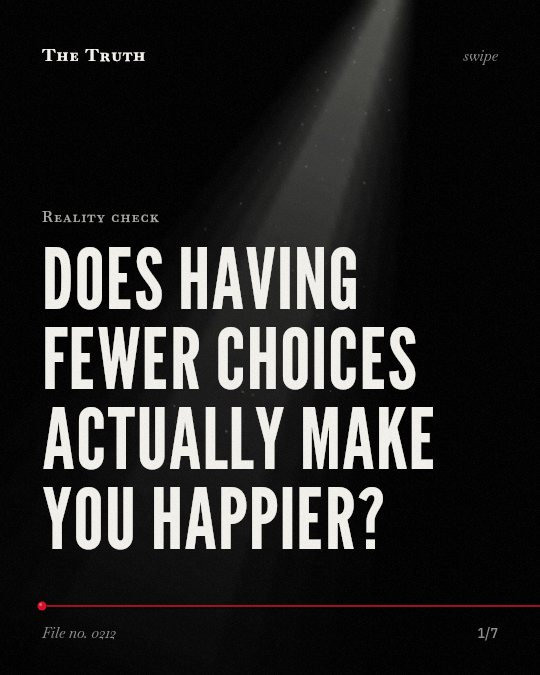

Reality check
Does having fewer choices actually make you happier?

Reducing options does not always improve your outcome.
While choice overload is linked to anxiety and lower satisfaction, simplifying the number of choices does not consistently lead to better psychological results.
Established. Several studies combined, or official data. The evidence is mixed.
What the research found
Choice overload can make you question your decisions before you even make them, set you up for unrealistically high expectations, and make you blame yourself for failures.
“choice overload can make you question your decisions before you even make them, it can set you up for unrealistically high expectations, and it can make you blame yourself for failures.”
Study, 2004. Schwartz, Works - Scholarship, Research, & Creative Expression (Swarthmore College). This shows a link, not a cause.
Choice overload is linked to decision-making paralysis, anxiety, and stress.
“This can lead to decision-making paralysis, anxiety, and stress.”
Study, 2004. Schwartz, Works - Scholarship, Research, & Creative Expression (Swarthmore College).
A significant decrease in satisfaction or motivation because of too many choices would require marketers and public policymakers to rethink their practice of providing ever-increasing assortments to choose from because they could possibly boost their success by offering less.
“A significant decrease in satisfaction or motivation because of too many choices would require marketers and public policymakers to rethink their practice of providing ever-increasing assortments to choose from because they could possibly boost their success by offering less.”
Systematic review, 2024. Dar & Gul, Qualitative Market Research An International Journal. This shows a link, not a cause.
The hypothesis regarding the influence of consumer fatigue from decision-making on the formation of brand loyalty was confirmed.
“The hypothesis regarding the influence of consumer fatigue from decision-making on the formation of brand loyalty was confirmed.”
Experiment, 2023. Kovshova & Savchenko, INNOVATIVE ECONOMY.
The impact of choice is complex.
Too many choices are linked to decision-making paralysis, stress, and lower satisfaction. However, the evidence is mixed on whether fewer options actually solve these issues.
How you view your decisions may change.
That may be why you feel stressed by variety, yet still feel unsettled even when the options are narrowed down. The problem is not just the number of choices.
This part is our reading of the evidence, not a finding.
A late night in a grocery aisle.
You stand before a wall of different cereals. You look at the labels. You feel tired. You still cannot decide which one to take home.
The honest summary
The evidence suggests that while too many choices can cause stress and lower satisfaction, the impact is complex and not always mitigated by simplifying the number of options.
The findings are inconsistent across different contexts, with some studies showing negative effects of choice overload while others find that reducing options does not improve outcomes.
Does the number of choices actually matter?
Sources
- Auqib Rasool Dar, Maleeha Gul (2024). The “less is better” paradox and consumer behaviour: a systematic review of choice overload and its marketing implications. Qualitative Market Research An International Journal. Systematic review, cited 12 times.
- Barry N. Schwartz (2004). The Paradox of Choice: Why More Is Less. Works - Scholarship, Research, & Creative Expression (Swarthmore College). Study, cited 2,511 times.
- Iryna Kovshova, Kira Savchenko (2023). THE IMPACT OF CONSUMER FATIGUE FROM MAKING DECISION ON THE FORMATION OF BRAND LOYALTY. INNOVATIVE ECONOMY. Experiment, cited 1 times.
Also read for this file, not quoted
- Ugwu et al. (2024). Paradox of life after work: A systematic review and meta-analysis on retirement anxiety and life satisfaction.
- Lenhoff et al. (2026). The Paradox of School Choice? Experimental Evidence on Choice Architecture, Anxiety, and Satisfaction.
- Tan et al. (2025). Environmental Social Governance ( ESG ) and Consumer Behavior: A Systematic Review and Research Agenda.
This file was researched and drafted by software, then checked by rules a model cannot talk its way around: each quote above was matched word for word against the paper, and every number had to appear in it. How files are made.